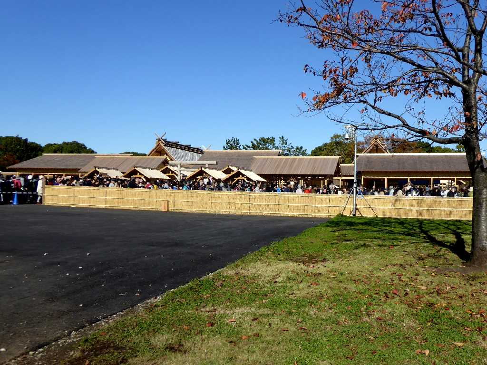
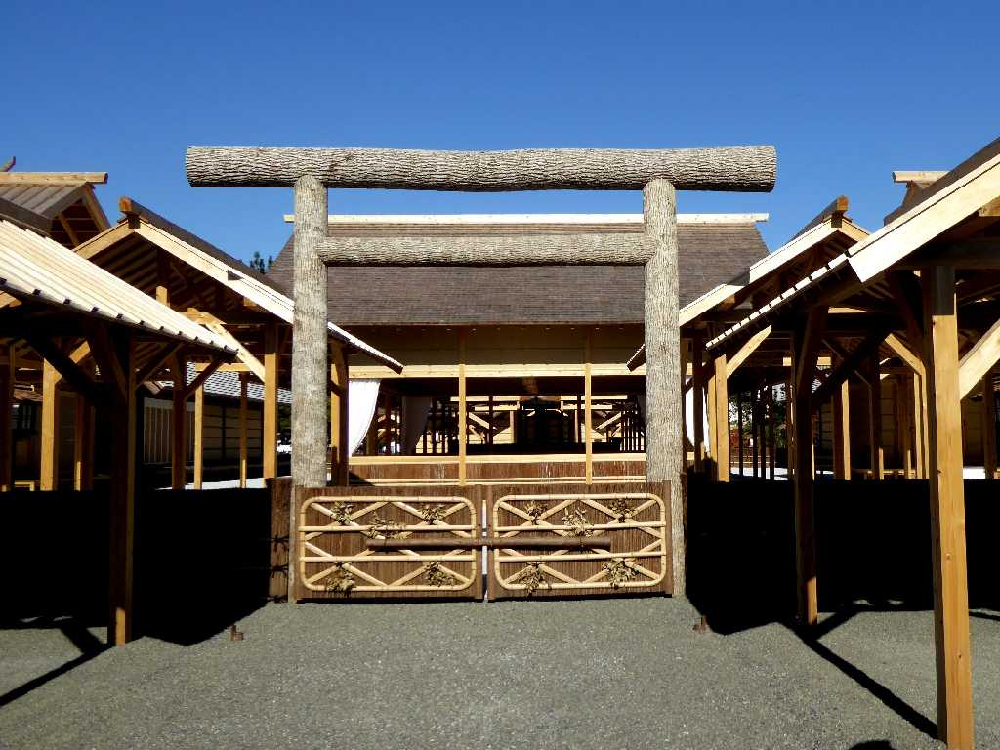
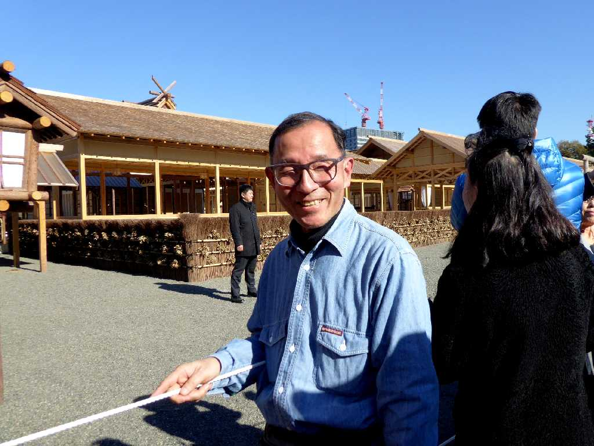
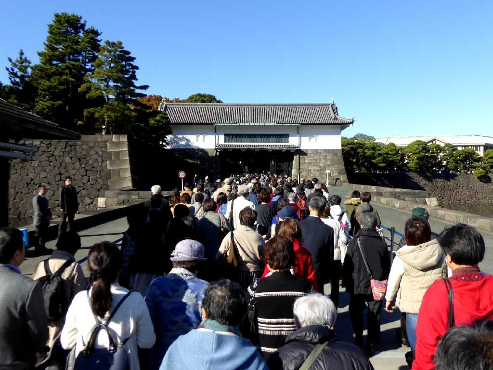
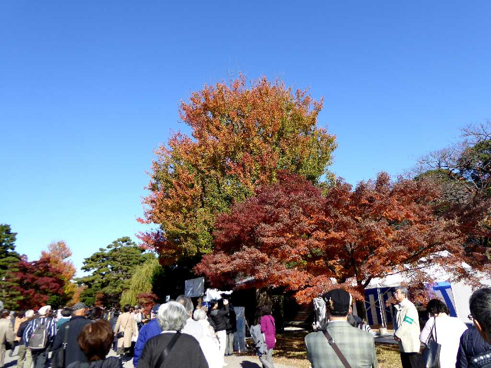
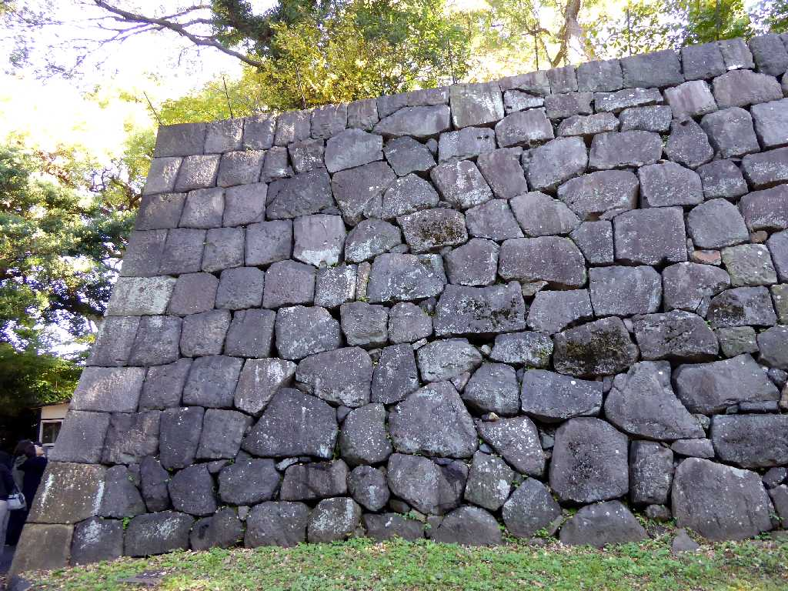
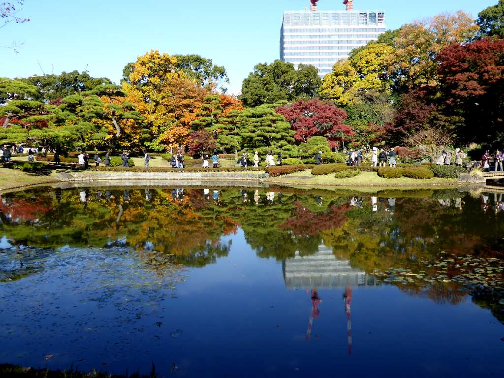
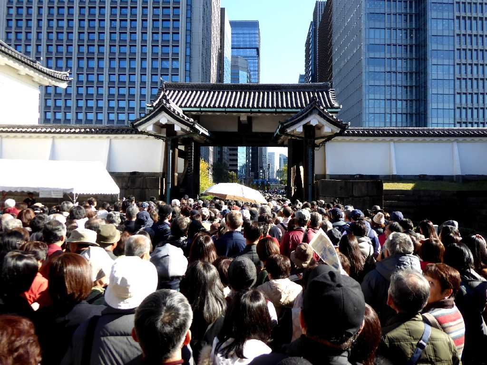
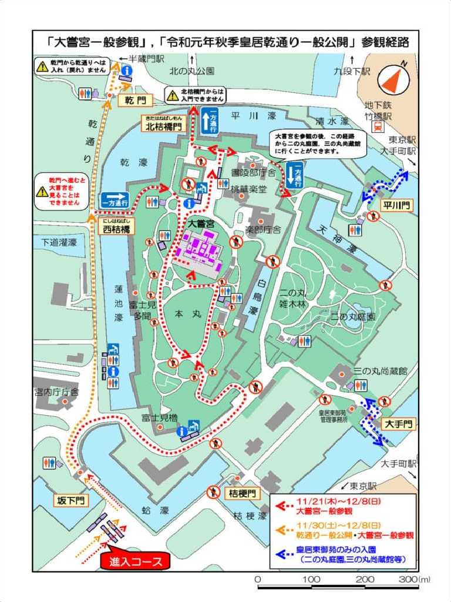

Daijōkyū Kōkyo Tōkyō 東京 皇居 大嘗宮
皇居内に創られた令和の大嘗宮

Daijōkyū Kōkyo 皇居 大嘗宮
人類の安寧と豊穣を願う

December 4 2019 Daijōkyū Kōkyo 皇居 大嘗宮
自由で競争は有っても戦火の無いバランスのとれた人の営みは難しい

Sakashita mon Kōkyo 皇居 坂下門

Inui dōri Kōkyo 皇居 乾通
紅葉が奇麗な乾通

Ishigaki Edojō Kōkyo 皇居 江戸城 石垣

Ninomaru teien Kōkyo 皇居 二の丸庭園

Ōte mon Kōkyo 皇居 大手門

AI解説